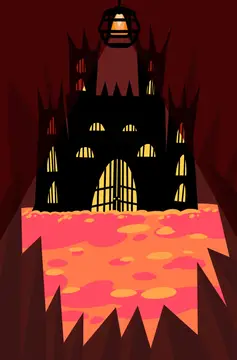

Ball is God?! Pyöritä tornia. Ole törmäys.
Vakava pystysuora laskuhalli, jossa vaakasuora veto pyörittää tornia putoavan Espain ympäri. Ohita turvalliset laskeutumiset, lataa yhdistelmämurska ja murtaudu läpi myyttisen maailman, jossa yksi vartioimaton osuma päättää juoksun.
Aktiivinen tuotanto: kymmenen paikkakohtausta, pomoja, haarautuva dialogi ja karmapolut, jotka muuttavat pelin sääntöjä.
Kierrävedä tornia Espain ympärille
Riskiohita kolme turvallista laskua
Murskaamurra alustan läpi
Nykyisen koontiversion sisällä
Karma muuttaa enemmän kuin dialogi.
Valoisat, neutraalit ja tummat karmapolut muuttavat kilven toimintaa, varoitusmerkkejä, vihollisten aggressiivisuutta ja pomojen vaiheita, joten tarina muuttaa sitä, miten pelaat.
Version tila Aktiivinen tuotantoKaikki kymmenen dialogimaailmaa
Dialogitaustat kaikille kymmenelle maailmalle laskeutumisjärjestyksessä: Ena ensin, Deka viimeisenä.



Nykyinen tuotantokäyttöliittymä
Tasonvalinta-, dialogi- ja tulosnäytöt nykyisessä versiossa.
Tämä on nykyinen kulku siinä järjestyksessä, jossa kohtaat sen: tasonvalinta, dialogi, välitavoitevalinta, sitten voitto tai erillinen tappionäyttö. Jokainen alla oleva kuva käyttää taidetta tuotannon Unity-projektista.
Taivaallinen reitti valitsee luodut tasot kymmenestä 100-tason luvusta.
Tuotantovalikko kartoittaa kymmenen sijaintia 100-tason luvuissa ja avautuu suoraan valittuun ajoon.

 201
201Dialogi tapahtuu paikan sisällä.
Hahmoportretti, paikan taide ja puhujakyltti jakavat yhden pystysuoran kehyksen.


Shash
Jatka sitten, mutta älä usko sen olevan helppoa. Edessä on koettelemuksia, joiden rinnalla kaikki aiempi tuntuu pelkältä pikkujutulta.
04 / Virstanpylvään valinta
Vastauksesta tulee osa laskeutumista.
Paikallisilla tasoilla 90 ja 100 erityinen paneeli pyytää varaa tai tappaa päätöstä ennen kuin keskustelu ratkaisee juoksun.

Säästä
Tapa
05 / Tulosvalikot
Voitto jatkuu. Tappio palaa samaan haasteeseen.
Nykyisellä koontiversiolla on kaksi erillistä tulostilaa: PanelWin tarjoaa toiston ja seuraavan tason, kun taas PanelOver pitää yhden erehtymättömän toistotoiminnon.
Voitto · PanelWin
Laskeutuminen läpäisty
 Toista
Seuraava
Toista
Seuraava
Toista
Seuraava
Dialogin hahmot
Kasvot kohtasivat matkalla alas.
Kaikki 25 merkkiä kelvollisilla tuotannon avoimella ja suljetulla muotokuvaparilla on sisällytetty alla. Vaihda ilmaisua siirtämällä korttia tai tarkenna sitä.


Pelin yleiskatsaus
Ball is God?! on hardcore-arcade-peli putoamisesta pyörivän tornin läpi.
Idea
Ohjaa Espa jumalallisen tornin läpi alas. Yksi virhe voi päättää kierroksen, ja suuret valintasi muuttavat sitä, miten maailma toimii.
Nykyinen versio
Toteutetaan kymmenen sijaintikohtausta, prosessitornin luominen, yhdistelmämurska, pyyhkäisykilpi, pomo-kokoonpanot, haarautuva dialogi, tuotantovalikot ja ilmaisuvalmiit muotokuvat.
Yleisö
Pelaajille, jotka pitävät vaikeista mobiiliarcade-peleistä, riski ja palkinto -ajoituksesta ja pomoista, ja joilla on tarina seurattavana.
Tila
Aktiivinen tuotanto. Viimeaikainen työ kattaa ajonaikaiset järjestelmät, maailmagrafiikan, testauksen ja sen, miten peli toimii puhelimella.
Ominaisuudet
Mitä teet Ball is God?! -pelissä
Vedä ja kierrä laskeutumista
Vaakasuora veto pyörittää tornia automaattisesti putoavan Espain ympäri, kohdistaen aukkoja, vaaroja ja turvallisia tasoja.
Hardcore-arcade-paine
Yksi suojaamaton osuma päättää kierroksen, joten tornia on luettava ja jokainen liike ajoitettava.
Pomot ja myyttiset maailmat
Kymmenen paikkakohtausta, joilla jokaisella on omat pomonsa, kuljettavat tarinaa maailmasta toiseen.
Valinnat, jotka muuttavat sääntöjä
Armo, voima ja karma muuttavat dialogia, kilpisääntöjä, vihollisen aggressiota, lennättimiä ja pomovaiheita.
Pelisilmukka
Näin pelaat Ball is God?! -peliä
- Vaihe 01Lue laskeutuminen
Skannaa seuraavat tasot, aukot ja vaarat ja etsi turvallisia ajoitusikkunoita pudotessasi.
- Vaihe 02Pyöritä tornia
Vaakasuora veto kääntää maailman Espain ympäri, kohdistaen turvallisen alustan tai tarkoituksellisen aukon.
- Vaihe 03Riskeeraa ja murskaa
Ohita kolme alustaa ryöstääksesi yhdistelmäiskun ja murtaudu sitten rakenteiden läpi, kun kilpi peittää yhden tappavan virheen.
- Vaihe 04Valitse seuraus
Armo ja voima muokkaavat karmaa, dialogia ja vihollisiin ja pomoihin kantavia pelisääntöjä.
Tarina / maailma
Myyttinen torni, jossa valintasi seuraavat sinua alas.
Ball is God?! sai alkunsa lapsuuden kiehtovuudesta liikuteltaviin pystysuoraan laskeutuviin pelihalliin: lukemaan aukkoja, reagoimaan nopeasti ja selviytymään vaiston varassa.
Muoto jaksaisi kantaa enemmän: pomoja, persoonallisia hahmoja, tarinan ja moraalista jännitettä. Nykyisessä projektissa seurataan Espa-hahmoa kymmenen paikkakohtauksen ja outojen hahmojen kaartin läpi, ja valinnat muuttavat sekä tarinaa että pelaamista.
Siksi tavoitteeksi tuli yksinkertainen pystylaskeutumisen arcade, jossa on pomotaistelun paine ja tarinavetoisen roolipelin seuraukset.
- Visio
- Pyörivän tornin arcade-peli myyttisellä tarinalla
- Maailmojen nykyinen laajuus
- Kymmenen sijaintia ja pomokokoonpanoa
- Tarinavaihe
- Täydellinen pitkä tarinaluonnos
- Tuotantotila
- Aktiivinen tuotanto
Lyhyesti
Yksinkertainen veto-ohjaus, ja tarina, joka muuttaa sääntöjä.
Vedä ja pyöritä -ohjaus on välitön. Loput tulee myyttisistä maailmoista, pomoista ja valinnoista, jotka muuttavat pelaamista.
Nykyinen versio yhdistää jo deterministisen tornigeneroinnin, riski ja palkinto -murskauksen, yhden iskun epäonnistumisen, pomot, haarautuvan dialogin ja pelattavuutta muuttavan karman.
- Genre
- Tarinavetoinen pystylaskeutumisen arcade
- Kohdealusta
- iOS / Android
- Pelisession muoto
- Nopeat taitopohjaiset kierrokset
- Studio
- WillowinWorlds
Lataa materiaalit
Ball is God?!-lehdistö- ja sisällöntuottajat
WebP-esikatseluja lehdistöjuttuja, julkaisijoiden arviointia ja kauppasivuviittauksia varten. Täysresoluutioiset lähdetiedostot saatavilla pyynnöstä.
Tuotemerkki ja hahmot
Pelikuvake sekä kaikki 25 nykyistä hahmoa, joilla on täydelliset tuotantodialogin muotokuvat. Nimet vastaavat Unity-lokalisointiavaimia.
EspaPelaajan hahmon muotokuva.
RevlaTuotannon dialogimuotokuva.
ShashTuotannon dialogimuotokuva.
ShushTuotannon dialogimuotokuva.
ShishTuotannon dialogimuotokuva.
GigoTuotannon dialogimuotokuva.
GogaTuotannon dialogimuotokuva.
GigaTuotannon dialogimuotokuva.
AskoldTuotannon dialogimuotokuva.
MirasTuotannon dialogimuotokuva.
HihTuotannon dialogimuotokuva.
HehTuotannon dialogimuotokuva.
HahTuotannon dialogimuotokuva.
MusyaTuotannon dialogimuotokuva.
DusyaTuotannon dialogimuotokuva.
SusyaTuotannon dialogimuotokuva.
VladusTuotannon dialogimuotokuva.
FrishaTuotannon dialogimuotokuva.
LurenTuotannon dialogimuotokuva.
KurenTuotannon dialogimuotokuva.
Don YagonTuotannon dialogimuotokuva.
LuryaTuotannon dialogimuotokuva.
KhleyaTuotannon dialogimuotokuva.
VaronTuotannon dialogimuotokuva.
WhiteTuotannon dialogimuotokuva.
Valikon taustat
Taivaan tason valintajärjestelmän käyttämä nykyinen tuotantotaide.
 Taivaallinen valikko
Taivaallinen valikkoPystysuorat laskeutumismaailmat
Täydellinen sarja kymmenen nykyisen sijainnin taustaa, tilattu Ena - Deka.
 01 · Taivaan maailmaEna: pystylaskeutumisen tausta.
01 · Taivaan maailmaEna: pystylaskeutumisen tausta.
 02 · AvaruusmaailmaDyo: pystylaskeutumisen tausta.
02 · AvaruusmaailmaDyo: pystylaskeutumisen tausta.
 03 · MyrskymaailmaTria: pystylaskeutumisen tausta.
03 · MyrskymaailmaTria: pystylaskeutumisen tausta.
 04 · LumimaailmaTessera: pystylaskeutumisen tausta.
04 · LumimaailmaTessera: pystylaskeutumisen tausta.
 05 · TulivuorimaailmaPente tausta; animoitu pelissä.
05 · TulivuorimaailmaPente tausta; animoitu pelissä.
 06 · ValtamerimaailmaEksi: pystylaskeutumisen tausta.
06 · ValtamerimaailmaEksi: pystylaskeutumisen tausta.
 07 · AavikkomaailmaEpta: pystylaskeutumisen tausta.
07 · AavikkomaailmaEpta: pystylaskeutumisen tausta.
 08 · MetsämaailmaOhto: pystylaskeutumisen tausta.
08 · MetsämaailmaOhto: pystylaskeutumisen tausta.
 09 · LuolamaailmaEnnea: pystylaskeutumisen tausta.
09 · LuolamaailmaEnnea: pystylaskeutumisen tausta.
 10 · Helvetin maailmaDeka: pystylaskeutumisen tausta.
10 · Helvetin maailmaDeka: pystylaskeutumisen tausta.
Tarina-arcaden taustat
Täydellinen dialogipaikkasetti: Valon sali sekä taustat kaikille kymmenelle maailmalle.
 00 · Valon saliAloitusdialogin tausta.
00 · Valon saliAloitusdialogin tausta.
 01 · TaivasvuoropuheluEna tarinan tausta.
01 · TaivasvuoropuheluEna tarinan tausta.
 02 · AvaruusvuoropuheluDyo tarinan tausta.
02 · AvaruusvuoropuheluDyo tarinan tausta.
 03 · MyrskyvuoropuheluTria tarinan tausta.
03 · MyrskyvuoropuheluTria tarinan tausta.
 04 · LumivuoropuheluTessera tarinan tausta.
04 · LumivuoropuheluTessera tarinan tausta.
 05 · TulivuorivuoropuheluPente tarinan tausta.
05 · TulivuorivuoropuheluPente tarinan tausta.
 06 · ValtamerivuoropuheluEksi tarinan tausta.
06 · ValtamerivuoropuheluEksi tarinan tausta.
 07 · AavikkovuoropuheluEpta tarinan tausta.
07 · AavikkovuoropuheluEpta tarinan tausta.
 08 · MetsävuoropuheluOhto tarinan tausta.
08 · MetsävuoropuheluOhto tarinan tausta.
 09 · LuolavuoropuheluEnnea tarinan tausta.
10 · HelvettivuoropuheluDeka tarinan tausta.
09 · LuolavuoropuheluEnnea tarinan tausta.
10 · HelvettivuoropuheluDeka tarinan tausta.

Ball is God?! UKK
Yleisiä kysymyksiä Ball is God?! -pelistä
Millainen peli on Ball is God?!
Hardcore-pystylaskeutumisen arcade-peli. Pyörität tornia putoavan Espa-hahmon ympäri, ohitat turvalliset laskeutumiset ladataksesi smasheja ja murtaudut myyttisten maailmojen läpi.
Miten Ball is God?! -peliä pelataan?
Pyöritä tornia vetämällä vaakasuunnassa, ohita kolme tasoa latautuaksesi ja pyyhkäise pystysuunnassa, kun jäähdytyskilven on kestettävä tappava osuma.
Onko Ball is God?! jo julkaistu?
Ei vielä. Peli on aktiivisessa tuotannossa: ajonaikaiset järjestelmät, maailmagrafiikka, tarinasisältö ja testaus. Julkista julkaisupäivää ei ole. Kohdealustat ovat iOS ja Android.
Mikä tekee Ball is God?! -pelistä erilaisen?
Se yhdistää riskin ja palkinnon arcade-paineen kymmeneen paikkaan ja karmaan, joka muuttaa dialogia, vihollisia, varoituksia, kilpiä ja pomoja.
Kuka tekee Ball is God?! -peliä?
WillowinWorlds, itsenäinen studio, joka tekee mobiilipulma- ja arcade-pelejä.
Voinko käyttää Ball is God?! -pelin lehdistömateriaaleja?
Kyllä, lehdistölle, julkaisijoiden arviointiin ja kauppaviittauksiin. Lähdetiedostot pysyvät yksityisinä, ellet pyydä niitä meiltä.
Ball is God?! Devlog
Mikä muuttui ja milloin
- Maailman pinnat ja vaarojen validointi
Hahmojen esitys, deterministinen generointi ja piikkivaarat saivat yhteisen visuaalisen ja validointikierroksen.
- heinäkuu 2026Tuotantokäyttöliittymän ja hahmojen viimeistely
Tasonvalinta, yhteiset toimintaohjaimet, pystysuora dialogikehys ja pariutuvat hahmoilmeet ovat nyt paikoillaan.
- helmikuu 2026Hankkeen laajuuden tarkistus
Tiimi suoritti suuren tarinaintegraatiopassin ja kävi läpi projektin koko mittakaavan: kymmenen maailmaa, moraalisia valintoja, pomoja ja useita loppuja.
- huhti-toukokuu 2025Tarinan uudelleenkirjoitus ja kyvyt
Koko tarina kirjoitettiin uudelleen, hahmojen kykyjä parannettiin ja moraaliset seuraukset tulivat selvemmiksi.
- elokuu 2024Tarinan suunta alkaa
Tiimi päätti, että Ball is God?! -pelin pitäisi olla enemmän kuin yksinkertainen arcade-laskeutuminen, ja lisäsi myyttisen tarinan ja moraalisten valintojen vision.
- heinäkuu 2024Alkuperäinen konsepti
Projekti alkoi studion ensimmäisenä peli-ideana: nopea pystysuora arcade-peli putoamisesta jumalallisen tornin läpi.
- Nykyinen versioArcade ja tarina yhdessä versiossa
Pyörivän tornin laskeutuminen, kombosmash, pyyhkäisykilpi, pomot, dialogi ja karma toimivat nyt yhdessä samassa versiossa.